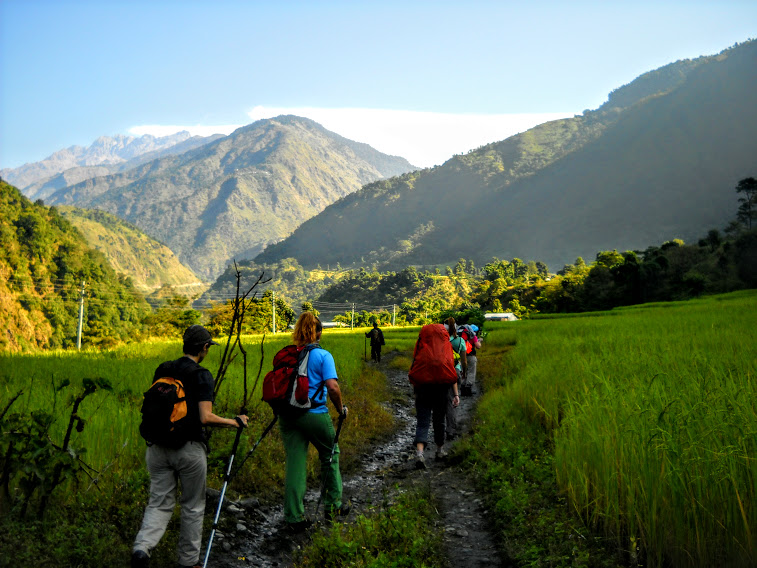
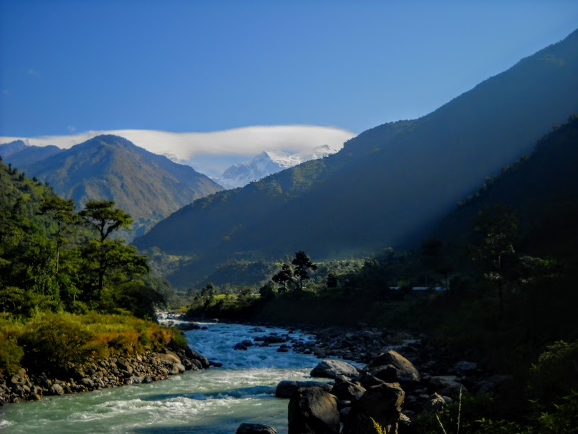
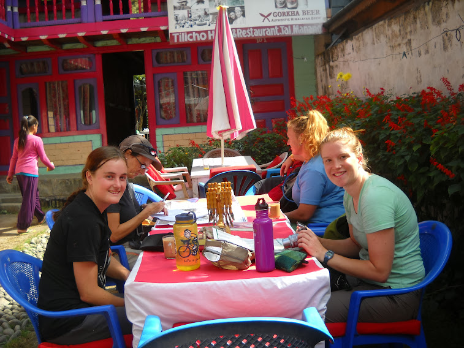
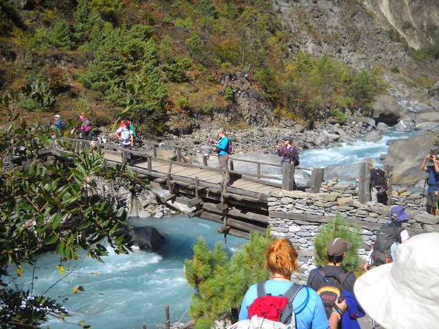
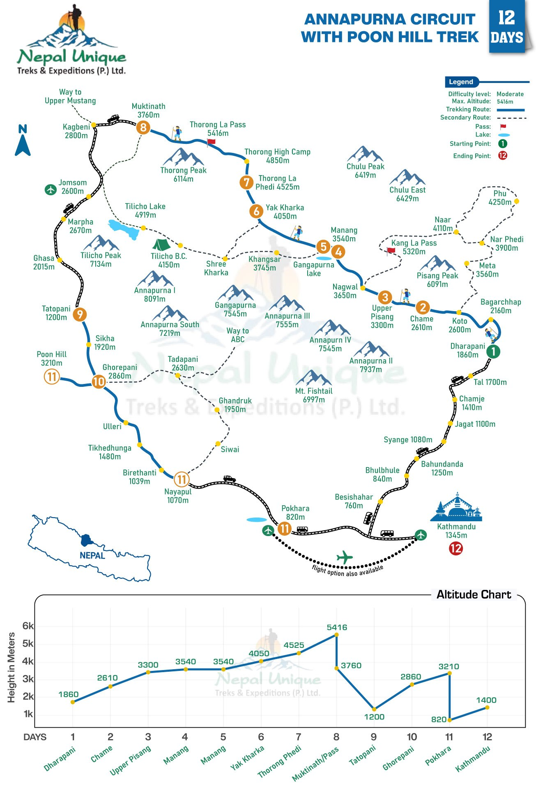

Annapurna Circuit with Poon Hill Trek
Discover the Annapurna Circuit with Poon Hill Trek, Informetive guideline and affordable cost, updated detail itinerary for 2025 or 2026, Amazing landscape and adventures expreance with Nepal Unique Treks Team. The Annapurna Circuit with Poon Hill Trek is one of the best 11-day treks that you can do in Nepal.





Key Trip Facts
Trek Overview
Trip Highlights
Annapurna Circuit with Poon Hill Trek Highlight
An out-of-the-world adventure while trekking on the Annapurna Circuit that takes you up to an altitude of 5416 meters above sea level.
The scenic sunrise view from the PoonHill viewpoint is situated at 3,210 meters above sea level.
Outstanding sightings of sky-touching mountains, like Machhapuchhre, Hiuchuli, and the Machhapuchhre mountain range.
Experience dramatic transitions from lush forests and terraced hills to alpine meadows, cliffs, and glacial valleys.
Chance to immerse in the unique tradition, culture, and lifestyle of the Gurung, Thakali, and Manangi people.
Trekkers can also relax in the natural hot spring in the place named Tatopani.
You can also explore the apple orchards and organic cider in Marpha, while strolling in the famous Jerry Galli.
Delve deep into Buddhism by visiting several monasteries and prayer walls, including the Braga Monastery.
Animal sighting opportunities, where you might witness some unique and endangered animals, including spotting Himalayan blue sheep, eagles, and yaks.
A chance to end this amazing trek in the serene lakeside city of Pokhara.
Annapurna Circuith with Poon Hill Trek Overview
Discover the Annapurna Circuit with Poon Hill Trek, Informetive guideline and affordable cost, updated detail itinerary for 2025 or 2026, Amazing landscape and adventures expreance with Nepal Unique Treks Team. The Annapurna Circuit with Poon Hill Trek is one of the best 11-day treks that you can do in Nepal. It is not just a trek, it's more like a heart-pounding journey to one of the highest passes, the Thorong La Pass (5,416 meters). Besides, the trekking route is also full of outstanding views, thrilling adventures, eye-soothing views, and some unique lifestyle practices. Furthermore, the Annapurna Circuit Trek with PoonHill hike also stands as an opportunity to walk through some of the best sections of the Nepali Himalayas.
The trail and tale to the Annapurna Circuit starts with a drive from Kathmandu to Dharapani, a village standing as the starting point of Trekking in the Annapurna Region. From there, we begin a thrilling, adventurous, and exciting walk to the Thorong La Pass at 5416 m. During this journey, the trail also leads us through several waterfalls, rivers, traditionally settled villages, and jaw-dropping views of the sky-towering mountains, including Annapurna Massif (Annapurna I to IV), Dhaulagiri, Machhapuchhre, Manaslu, Gangapurna, Tilicho, and Pisang Peak.
Other than that, the journey also takes us on a visit to the Muktinath Temple. This temple, located at an altitude of 3,760 meters above sea level, stands as one of the most valuable and significant temples for Buddhist and Hindu pilgrims. Furthermore, there are also several other significant temples throughout the path. In addition to that, you will also get chances to visit some significant monasteries with huge prayer wheels.
This adventurous walk on the Annapurna Circuit with Poon Hill Trek ends with a final hike to the Poonhill viewpoint. Here, the trekkers can get an outstanding sunrise view along with the views of snow-covered peaks turning golden as the sun's light hits them. After that, we will return to Pokhara, where you can go for a much-needed rest by the serene Lakeside.
Why Choose Nepal Unique Treks?
Going for an adventurous trek like the Annapurna Circuit with Poon Hill Trek requires proper planning and preparation. However, the trekkers also need assistance from a well-qualified, long-running, and trusted trekking agency in Nepal, and that is Nepal Unique Treks. Let us tell you that there are many advantages of choosing us to assist you for the Annapurna Circuit Treks:
Nepal Unique Treks offers one of the most adventurous and thrilling treks to the Annapurna Circuit Trek.
We also ensure a company of highly professional, educated, and professional trekking guides to lead you through this adventurous journey.
Our team also makes proper arrangements for food, accommodation, and the basic amenities throughout the Annapurna Circuit Trek.
With us, you can also expect guides with fluent English, making it easy for you to communicate with the locals.
We also try our best to provide an affordable and reasonable price for the Annapurna Circuit with Poon Hill Trek.
Last but not least, Nepal Unique Treks also works for the benefit and welfare of the remote areas of Nepal. Therefore, going for this trek with us means that you will indirectly work for the welfare of Nepal's remote areas.
Annapurna Circuit with Poon Hill Trek Permits
Going on any trekking journey in Nepal requires trekkers to have some specific permits. The same goes for the Annapurna Circuit with Poon Hill Trek journey as well. Here are the permits that you must have for this adventurous trek in the Annapurna region:
Annapurna Conservation Area Permit (ACAP): This provides authorized entry inside the Annapurna Conservation Area, a protected region in Nepal.
Trekkers Information Management System (TIMS): This management system or permit helps track trekkers' movements and provides emergency contact information.
Annapurna Circuit with Poon Hill Trek Itinerary: Day by Day
12 Days program for Annapurna Circuit with Poon Hill Trek. Daily timings and sequences remain flexible according to weather, flight operations, and group pace.
Day 1: Kathmandu to Dharapani village (1,860m / 6,200ft), 230 km, 10 hrs by Jeep
Approx. 1,860 m / 6,102 ft
The Annapurna Circuit Trek with Nepal Unique Treks and Expeditions begins with a drive from Kathmandu to Dharapani village. As you wake up in the morning and have your breakfast, our representatives will pick you up from the hotel. After that, we go for an adventurous drive towards the Dharapani Village. Located at an altitude of 1860 meters above sea level, Dharapani is the starting point of the Annapurna Region trek. It takes about 10 hours for us to reach Dharapani by jeep. As we leave Kathmandu, the landscape starts to transform, and you will see rolling hills give way to terraced farmlands, traditional villages, and distant snow-capped peaks. Besides, we also pass through several key settlements, including Besisahar, before taking on an off-road trail along the Marsyangdi River. Let us also tell you that this drive can be bumpy, so we recommend that you be prepared. Once you reach Dharapani, you will notice that it is a quiet village surrounded by pine forests and dramatic cliffs, providing a perfect transition from the lowlands into the Himalayan wilderness. Check into your room, freshen up yourself and then stroll around the village before having dinner and sleeping.
Day 2: Trek from Dharapani (1,860m / 6,200ft) to Chame village (2,610m /8,890ft), 6hrs
Approx. 2,610 m / 8,563 ft
On the second day, we set out on a journey from Dharapani to Chame Village, another beautiful village in the Annapurna Conservation Area. This section of the Annapurna Circuit Trek takes us deeper into the Marsyangdi valley. Just as you start the walk, the trail ascends gradually through dense pine and fir forests, crossing traditional villages like Bagarchhap and Danaque. Also, you will get to see outstanding views of Annapurna II and Lamjung Himal. After a moderately difficult walk for about 5 to 6 hours, we finally step into the Chame Village. The guide will lead you to the hotel. Get freshened up and then go for a quick stroll around the village. This beautiful village has stone-paved paths, stone-built houses with a tin roof. Besides, the people here also offer warm hospitality, and you can also learn a lot about this village if you interact with them. In the evening, return to the hotel for a locally-prepared delicious dinner followed by a cozy sleep in the teahouse.
Day 3: Trekking from Chame (2,610m / 8,890ft) to Upper Pisang (3,300m / 10,826ft), 6 hrs
Approx. 3,299 m / 10,823 ft
As usual, we begin today's walk after having a fulfilling breakfast in the hotel. Once you get ready, the guides lead you on another adventurous section of the Annapurna Circuit Trekking route. Yes, this day's trail takes us through dense forests, waterfalls, and of course, following the Marsyangdi river. Besides, the trekkers can also enjoy some panoramic views of the cerdant landscapes, alpine meadows, and jaw-dropping Himalayas. Also, not to mention, crossing the rivers through wooden bridges is a thrill as well. It takes about 6 hours for us to reach Upper Pisang, a village situated at an altitude of 3,300 meters above sea level. While reaching here, we also get the first sighting of the Paungda Danda rock face. As you reach Upper Pisang, you will find yourself in a traditional Himalayan village decorated by a Buddhist Monastery. Furthermore, Upper Pisang also offers outstanding views of Annapurna II, along with other surrounding peaks
Day 4: Trekking from Upper Pisang (3,115m / 10,200ft) to Manang village (3,540m / 11,300ft), 6 hrs
Approx. 3,538 m / 11,608 ft
The fourth day stands as one of the most significant days of the entire trek on the Annapurna Circuit. Why so? Well, because we will be ascending to one of the famous towns in the Himalayas, Manang. Situated at an altitude of 3,540 meters above sea level, you might start experiencing altitude sickness at this point. Therefore, make sure to keep yourself prepared for that. As you leave Upper Pisang and head towards Manang, you will walk on the trail renowned for its breathtaking Himalayan vistas and cultural richness. Besides, the path gradually ascends through arid hillsides and traditional Tibetan-style villages like Ghyaru and Ngawal. Furthermore, this section of the Annapurna Circuit Trail also offers spectacular views of different snow-covered peaks, including Annapurna II, III, IV, and the majestic Pisang Peak. The final section of the trail takes us through prayer wheels, mani wheels, and some plateaus as well. Finally, after about 6 hours of walking, we will reach Manang, a village of high significance. Here, you can find several tea houses, bakeries, and cultural sites, including the local gompa and the Himalayan Rescue Association. For today, we recommend that you take proper rest and enjoy a warm meal because we will have another day to explore Manang.
Day 5: Acclimatization day at Manang village (3,519m / 11,545ft)
Approx. 3,540 m / 11,614 ft
On the fifth day, we will not continue the journey on the trail. Yes, because it's the day for us to acclimatize or rest in Manang itself. Also, this is the day when you can discover the true beauty and significance of the Manang village. After walking around the village, we will also visit the Gangapurna Lake and the viewpoint. From here, you can get amazing glimpses of the glacier and surrounding peaks. Besides, if you have more energy and and active, we can also go for a hike to the Hundred Lamas Cave or the Milarepa Cave located at an altitude of 3,600 meters above sea level. You will be amazed by the way this trail goes and where it takes you. As you return to Manang, you can take your time to explore the village’s rich cultural fabric and visit the local monastery. Besides, this is also the best place to enjoy freshly baked goods from mountain bakeries and attend an acclimatisation talk by the Himalayan Rescue Association. In the evening, you can return to the hotel for another delicious dinner and sleep before continuing further on the Annapurna Circuit Trekking map.
Day 6: Ascend from Manang (3,540m / 11,300ft) to Yak Kharka (4,050m / 14,275ft), 6 hrs
Approx. 4,050 m / 13,287 ft
On the sixth day, we leave Manang behind and ascend further on the Annapurna Circuit Trekking trail. This alpine trail limbs steadily through the Annapurna Circuit Trekking map, with the tree line becoming thinner. Furthermore, you will also notice the snow-capped peaks growing even closer. Along with that, the trail also passes through several small settlements, including Tengi and Gunsang. This section of the trek introduces a more barren, high-altitude landscape dotted with grazing yaks and sparse juniper shrubs. Furthermore, you can also sense the air growing thinner. Therefore, we recommend a slow, steady pace to minimize the risk of altitude sickness. As you reach Yak Kharka, you will find yourself in a peaceful hamlet surrounded by hills and with comparatively fewer settlements. Well, after 6 hours of walking at such a high altitude, you shall go for a proper dinner and of course, a relaxing and cozy sleep.
Day 7: Ascend from Yak Kharka (4,050m/ 14,275ft) to Thorong Phedi (4,525m / 14,525ft),6 hrs
Approx. 4,525 m / 14,846 ft
On the seventh day, the guides will take you to the base of one of the highest passes of the Himalayas, the Thorong Phedi. "Phedi" means base in Nepali, and Thorong Phedi means the base of Thorong or the Thorong La Pass. The trail takes us through several ups and downs, and we will also cross the Marsyangdi River by a wooden bridge. After that, the trail ascends over a mountain and then over a cliff. Throughout all of these walks in this section of the Annapurna Circuit Trek, you will also be surrounded by some towering snow-capped peaks and panoramic landscapes of the dessert hills. You will see significantly less vegetation with multiple patches of yellowish green bush throughout these sand and stone-made hills. If you look to the top of these hills, you will also notice the top covered by snow. On the way, you will also find some recently built guesthouses. If you see a signboard with a fork and a knife, that simply means that guesthouses are very near. Again, it takes 6 hours to cover this section of the trek in the Annapurna Circuit while walking through areas with a significantly low ratio of oxygen in the air. As you reach the guesthouse in Thorong Phedi, you can take some rest and then stroll around the settlement. We will have dinner and spend the night in the same guesthouse before heading further on the trail.
Day 8: Trekking from Thorong Phedi (4,525m / 14,525ft) to Muktinath Temple (3,760m / 12,623ft) via Thorong La High Pass (5,416m / 17,756ft), 8/9 hrs
Approx. 3,760 m / 12,336 ft
The eighth day stands as one of the most difficult, strenuous, and challenging sections of the entire Annapurna Circuit Trek. We recommend that you prepare a little more today, as we certainly have a long way to cover. Besides, we will also begin the walk early today, as it will be a sunrise view hike to Thorong La Pass. This pass, situated at an altitude of 5,416 meters above sea level, offers one of the most spectacular sunrise views. Let us tell you that the trail from Thorong Phedi to Thorong La Pass will often be covered with snow. Moreover, the trekkers also need to walk through glacial moraines and barren ridges before getting a peek into the panoramas of the Annapurna and Dhaulagiri ranges. After spending time soaking in the spectacular views from Thorong La Pass, we make our way towards the Muktinath temple. Nestled at an altitude of 3,760 meters above sea level, Muktinath is a sacred site, revered by both Hindus and Buddhists. Besides, you will also see a lot of pilgrims taking a shower under 108 taps here. After spending some time in the religious and spiritual peacefulness of the Muktinath temple, we go to the hotel for dinner and overnight stay. After almost 8 to 9 hours of walking on such high altitude and rugged terrain, you will certainly need a cozy and relaxing sleep.
Day 9: Drive from Muktinath (3,760m / 12,623ft) to Jomsom and Tatopani (1,200m / 3,940ft),6/7 hrs
Approx. 1,200 m / 3,937 ft
From Muktinath, you will meet a lot of other trekkers and even travellers who go there by jeep. Yes, Muktinath is one of the most famous tourist destinations in Nepal, especially for religious people and people who love to go for rides. Yes, people even go for motorcycle rides to Muktinath or Lower Mustang. However, in our case, we return to Kathmandu by a jeep or van. From Muktinath to Kagbeni and then to Jomsom is how our journey for the day ends. Jomsom is another beautiful settlement in the lower Mustang region, sitting at an altitude of 2743 meters above sea level. This place has a lot of hotels and guesthouses. Well, almost every house in this settlement has a hotel, guesthouse, or small shops. Other than that, you can also see an airport (Jomsom Airport). However, we do not stop today's journey here and make our way to Tatopani. Tatopani is well-known for its natural hot springs, and it is a location where we may unwind by soaking in them. According to legend, Tatopani's waters can treat ailments of the skin. Well, after a refreshing dive and delicious dinner, we also spent a night here in Tatopani.
Day 10: Trekking from Tatopani (1,200m / 3,940ft) to Ghorepani village (2,860m / 9,385ft), 6 hrs
Approx. 2,860 m / 9,383 ft
Well, if you thought we would continue driving on the tenth day as well, you are not correct. That is because the Nepal Unique Treks & Expeditions' guides take you for a hike from Tatopani to the Ghorepani village. The climb starts from the eastern side of the Kali Gandaki River. After that, we walk towards the village, and the route also takes us past some other villages, including Sikhe and Chitre Thakali. Besides, we also walk past some verdant forests with rhododendron, birch, and magnolia trees, as well as terraced farmlands with mountains all around. After almost 6 hours of walking, you will finally find yourself in a traditionally rich Gurung settlement, the Ghorepani village. Besides, you will also get to see mesmerizing views of different mountains, including Annapurna South, Machhapuchhre (Fishtail Mountain), Dhaulagiri, and Hiunchuli. This village is famous for the locally prepared Thakali Khana set. Therefore, that's what we will have for dinner before sleeping for the night.
Day 11: A Hike to Poon Hill (3,210m / 10,525ft) then descent to Birethanti (1,039m / 3,250ft) - Drive to Nayapul, Pokhara, 8/9 Hrs
Approx. 810 m / 2,657 ft
Finally, we have arrived on the last day of the 11-day Annapurna Circuit Trek package. As you wake up and have your breakfast, we start the journey with an early morning hike towards PoonHill. PoonHill stands as one of the best viewpoints to watch the sunrise throughout Nepal. Besides, this hiking or trekking route is also considered to be a preparation Trek in Nepal. Take your time to enjoy the spectacular sunrise view along with the jaw-dropping scenes of the Annapurna and Dhaulagiri massifs. After that, we will descend to Birethanti for breakfast before driving to Pokhara via Nayapul. This entire journey takes about 8 to 9 hours to complete, but you will not be very tired. Why so? Well, because the majority of today's journey will be covered by driving. As you reach Pokhara and get off the vehicle, our Annapurna Circuit Trekking journey officially comes to an end.
Day 12: Drive from Pokhara to Kathmandu by Tourist Bus, 7/8 hrs, 1345
Approx. 1,345 m / 4,413 ft
After Having Breakfast in Pokhara Hotel, transfer to the Tourist Bus station and the 7/8 hours drive to Kathmandu via Prithibi Highway, White Water Rafting Rivers (Trisuli River), check in the Hotel, and rest and freshen up. At Early Evening, Nepal Unique Treks invites you for your farewell dinner in the Nepali Cultural restaurant, where you can enjoy and explore the cultural performance. You will be awarded by certificate for completing of Annapurna Circuit Trek. Nepal Unique Treks will provide you International airport pickup and drop-off by private car. Further, if you have any tourism activities, we can assist you. Please talk with our expert.
What is Included (Regular Package)
What is Excluded
Booking Dates & Availability
Packing List for Annapurna Circuit with Poon Hill Trek
Essential Info: Down jackets and sleeping bags can be rented/arranged per package inclusions.High-Altitude Trail Gear (6 items)
Cold-Weather Layering System (5 items)
Sleep, Health & Permits (3 items)
Read before you book: Annapurna Circuit with Poon Hill Trek
Practical logistics derived directly from this package's route facts, inclusions, and elevation profile.
Accommodation & Meals (Hotel, Lodge & Tea House)
Accommodation follows the package grade (Hotel, Lodge & Tea House) in Kathmandu and along the Annapurna route. Check your package Includes section for included meals and Kathmandu hotel nights.
Permits & Local Logistics
Transportation is arranged via Bus, Car. Applicable permits listed in the package inclusions are arranged by Nepal Unique Treks prior to departure.
Route Difficulty & Elevation (5416 m)
Annapurna Circuit with Poon Hill Trek is rated Adventure with a maximum elevation of 5416 m. Follow your guide's pacing and stay hydrated throughout the 12 Days itinerary.
Best Time to Visit (Spring (March – May), Autumn (Sep – Nov))
Recommended operating season on the source page: Spring (March – May), Autumn (Sep – Nov). Additional official notes from the source page follow below.
Traveller Useful Information
The Annapurna Circuit with Poon Hill Trek is considered a moderate to challenging trek. For this reason, this trekking journey requires good physical fitness along with some prior trekking experience. Besides, you can expect the Poon Hill trek to be comparatively easy. However, ascending to the high-altitude pass (Thorong La Pass 5416m) and other alpine settlements certainly can be challenging.
From steep ascents, walking over some rugged and technical trails, and sometimes walking for about 6 to 7 hours every day, you certainly need to be prepared. In some cases, weather can also stand as a factor making the Annapurna Circuit Trek difficult. Therefore, we recommend the trekkers to choose the perfect time or the best season to go for this trek, keep themselves physically fit, and be mentally prepared. If you follow these guidelines and listen to the guides properly, the Annapurna Circuit Trek might not be as difficult as it would be without proper preparation.
One of the best ways to prepare for any trek, including the Annapurna Circuit Trek, is by choosing the best season for this trek. Well, let us tell you that Spring (March to May) and Autumn (September to November) stand as the best seasons for the Annapurna Circuit Trek.
During these seasons, the weather remains ideal for trekking with clear skies and temperatures remain mild, i.e., 5 to 20 degrees Celsius in the day. Besides, you can also experience a comparatively mild temperature during the night. Furthermore, the entire trail is also adorned with the vibrant rhododendron blossoms, especially in March and April. Due to the increase in greenery, flora, and fauna, you can also get some chances to witness different endangered wildlife.
However, if you choose to go for this adventurous trek in the Annapurna Circuit in some other seasons, you must be very careful. Even though trekking in winter, summer, and monsoon is possible, there might arise several circumstances where you might regret your decisions as well. That's because during the winter season, the scenes are abrupt, and the routes become slippery due to heavy snowfall. Besides, the monsoon season also maximizes the chances of landslides and flooding in certain areas. Therefore, we recommend the trekkers to go for this trek during the Spring and Autumn seasons for the best experience.
Throughout the Annapurna Circuit Trek, Nepal Unique Treks ensures proper food and accommodation for the trekkers. Our package includes three meals per day (breakfast, lunch, and dinner) along with accommodation in well-facilitated tea houses, guesthouses, or hotels. All these accommodation hubs offer highly hygienic, healthy, delicious, and fulfilling locally-prepared food items. Nepali Khana Set stands as the most famous option; however, you can also expect other items in the menu. At higher altitudes, you can even go for yak meat, which costs a little more than the regular Thali sets. Other than lunch, you will also get served with a proper breakfast, tea, coffee, and fresh seasonal fruits.
Talking about accommodation, we make sure to arrange comfortable guesthouses or hotels with cozy beds and attached toilet/bathroom. Furthermore, these hotels and tea houses also offer other basic facilities, including WiFi, internet, electricity, and other basic amenities. Therefore, if you book the package with Nepal Unique Treks and Expeditions, you do not have to worry about the arrangements of food and accommodation at all.
One of the most important things to do before going for any trekking journey, including the Annapurna Circuit with Poon Hill Trek, is to prepare properly. Without perfect preparation and planning, even the best of trekkers cannot successfully ascend this trail. Remember that you need to ascend to an altitude of 5416 meters above sea level. Ascending to such a high altitude requires exceptional physical and mental fitness, determination, good diet, a well-hydrated body, and last but not least, some practice for sure.
Therefore, here are a few things that we recommend the trekkers do to prepare for the Annapurna Circuit Trek:
Physical Fitness
Physical fitness stands as the most important factor when it comes to preparing for the Annapurna Circuit Trek. Therefore, we recommend the trekkers to concentrate on making themselves physically fit, gaining some endurance, and going for some cardiovascular exercises. These exercises include hiking, walking, jogging, and cycling.
Mental Preparation
Along with physical fitness, mental awareness and preparation are also very important for a successful trek in the Annapurna Circuit. Therefore, we recommend the trekkers to do some research about this trekking route and try to learn about the challenges and obstacles of the trail. Moreover, we also recommend that you understand the religion, tradition, culture, and lifestyle of the Annapurna region.
Other Important Considerations
Permits: You shall obtain all the necessary permits, including a TIMS card and the Annapurna Conservation Area Permit (ACAP).
Budgeting: We recommend that you plan your budget for transportation, accommodation, food, and permits.
Acclimatization: Allow adequate time for acclimatization at higher altitudes to minimize the risk of altitude sickness.
Hydration and Nutrition: During the trek, you must also stay well-hydrated and eat a balanced diet rich in protein, carbohydrates, and minerals.
Respect Local Culture: Be mindful of the local culture and traditions.
Leave No Trace: Practice Leave No Trace principles to minimize your impact on the environment.
Packing also stands as one of the best ways to prepare for the Annapurna Circuit Trek. Therefore, we recommend that you follow the list provided below to pack for the Annapurna Circuit Trek:
Clothing
Base Layers (Moisture-Wicking):
2–3 thermal tops (merino or synthetic)
2 thermal leggings
Insulation Layer:
Fleece or lightweight down jacket
Insulated vest (optional for layering)
Outer Layer:
Waterproof & windproof jacket (Gore-Tex recommended)
Waterproof trousers
Trekking Clothes:
2–3 quick-dry t-shirts
1–2 long-sleeve shirts (sun protection & warmth)
2–3 trekking trousers
1 pair of shorts (especially useful in the lower sections near Poon Hill)
Lightweight fleece pullover
Evening/Teahouse Wear:
Comfy pants (e.g., joggers or thermal bottoms)
Warm jacket (down jacket for higher altitudes)
T-shirts and base layers for sleeping
Woollen hat/beanie and gloves
Buff or neck gaiter
Footwear
Well-broken-in trekking boots (water-resistant with ankle support)
Camp shoes or sandals (for evenings)
3–4 pairs of hiking socks (wool/synthetic)
1–2 pairs of warm thermal socks (for higher altitudes)
Bags & Storage
Main backpack (50–65L) if carrying your gear
Daypack (20–30L) for essentials
Duffel bag (if using a porter)
Rain cover for both packs
Dry bags/stuff sacks for organisation and water protection
Sleeping
4-season sleeping bag (rated to -10°C or lower)
Sleeping bag liner (optional but adds warmth & hygiene)
Toiletries & Health
Biodegradable soap & shampoo
Toothbrush & toothpaste
Quick-dry towel
Sunscreen (SPF 30+)
Lip balm with SPF
Hand sanitiser
Wet wipes & tissue paper
Menstrual hygiene products
Other Important Items
Sunglasses, sunhats, sunscreen, and other sun protection items.
Travel insurance (must cover high-altitude trekking)
Cash (Nepali Rupees, especially for remote areas)
Sunglasses (UV protection)
Water bottles or hydration bladder (2–3L total capacity)
Energy bars/snacks
Power bank/solar charger
Universal plug adapter
Maps or an offline trekking app (e.g., Maps.me, Gaia GPS)
Are you excited to go for the Annapurna Circuit Trek? If so, we, at Nepal Unique Treks & Expeditions, are more than excited to take you on this adventurous Trekking Route in the Annapurna Region. So, don't waste your time, just hit the BOOK NOW button to book the Annapurna Circuit Trekking package right away! After booking the package, all you need to do is deposit 30% of the entire package cost. That's what confirms the booking.
If you have any more questions or queries regarding this trekking package or any of our services, you can also click on the INQUIRY NOW button just below the BOOK NOW button. Alternatively, you can also connect with us via WhatsApp, Viber, or Zalo. At last, be ready to go for this outstanding adventure with Nepal Unique Treks & Expeditions.
Altitude Profile of Annapurna Circuit with Poon Hill Trek
Weather on Annapurna Circuit with Poon Hill Trek
Annapurna Circuit with Poon Hill Trek Route Map

Book This Trek
Contact our Kathmandu coordinators using the booking panel for private or fixed-group departures.
Trip Feedback
Explore verified traveller stories or leave feedback on Nepal Unique Treks.
Visit Nepal Unique Treks